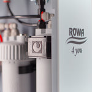

Wasserfiltration
ROWA 4 you
ROWA 4 you bietet Systeme und Produkte für Trinkwasserfiltration, Umkehrosmose und Wasseraufbereitung. Die Datenbank führt die offiziell veröffentlichten Modelle und technischen Eigenschaften.

ROWA 4 you bietet Systeme und Produkte für Trinkwasserfiltration, Umkehrosmose und Wasseraufbereitung. Die Datenbank führt die offiziell veröffentlichten Modelle und technischen Eigenschaften.